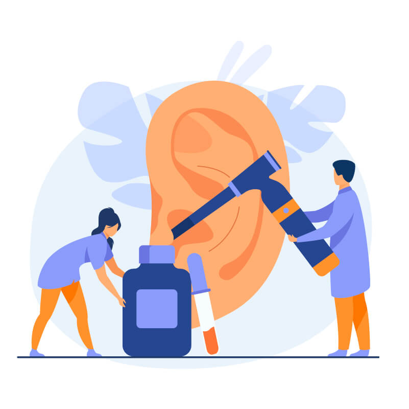

Servicios
Agenda el servicio de fonoaudiología que necesitas en simples pasos
Fonoaudiología Online
Consulta online infanto-juvenil o adulto
Accede a evaluación fonoaudiológica desde cualquier lugar con tu dispositivo con internet.
Fonoaudiología a Domicilio
Evaluación e intervención para niños y adolescentes
Servicio en entorno familiar, lo que facilita la participación de los padres y crea un ambiente seguro y cómodo.
Fonoaudiología a Domicilio

Evaluación e intervención para adulto
Atención personalizada y adaptada a sus necesidades, permitiendo a los pacientes recibir el cuidado necesario sin salir de su hogar.
Fonoaudiología a Domicilio
Otoscopia + Lavado de oídos para todas las edades
Evaluación del conducto auditivo para detectar obstrucciones o acumulaciones de cerumen y lavado de oídos profesional.
